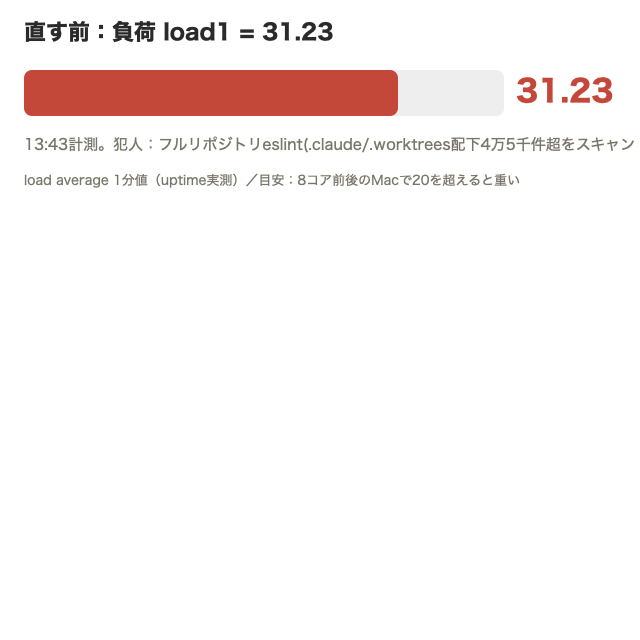
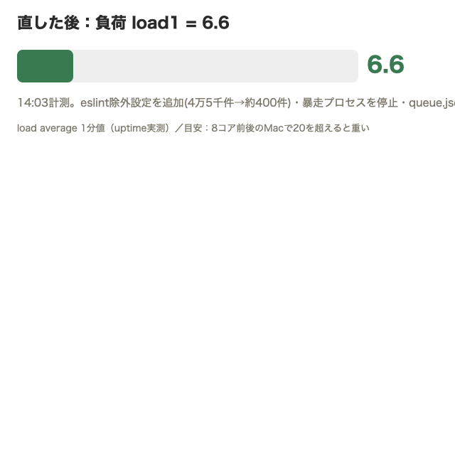

| 確認項目 | 結果 |
|---|---|
| eslintの除外設定(.claude/.worktrees/tools/supabase) | 直した・joy-relief-station本番へpush済み |
| 暴走していたフルリポジトリeslintの停止 | 停止した(load低下を実測) |
| 進捗表の10秒ごと重い再描画 | 差分が無ければ再描画しない仕組みに変更・反映済み |
| 進捗表タブが固まる原因1(中継所への通信詰まり) | 8秒で諦める仕組みを追加・反映済み |
| 進捗表タブが固まる原因2(外部の中継トンネルが9/9朝から死亡) | 負荷が高すぎて自動修復が止まっていたのが真因。負荷を下げた上で立て直し、実測200を確認 |
| あとで見る棚(652番)が1日以上止まっていた件 | 常設メンテ係(715番と同枠組み)に組み込み毎日自動化 |
| Braveの単一タブが97〜132%食っていた件 | Braveには触れない方針のため未対処(原因特定のみ) |